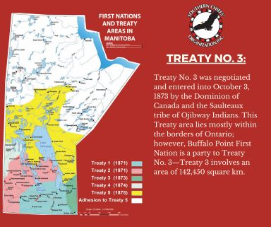
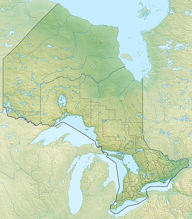

Introduction to Treaty 3
Treaty 3 was signed on October 3, 1873, between the Crown and the Ojibwe Nation. This agreement aimed to support settlement in Canada while respecting Indigenous rights to their lands.
The treaty covers a large area, including parts of modern Ontario and Manitoba, and it allows the Ojibwe people to hunt, fish, and gather in their traditional territories.
Location of Negotiation
Treaty 3 was negotiated at the northwest shore of Lake of the Woods. This location was important for many Indigenous groups and European settlers.
Lake of the Woods is still a cultural area for the Indigenous communities involved in Treaty 3.
Historic Terms of Treaty 3
The treaty included the transfer of land to the Crown in exchange for several promises, including:
- Money for the lands given up.
- Rights to hunt and fish in their traditional areas.
- Support for education and healthcare for the Ojibwe communities.
Treaty 3 is special because it was one of the first treaties to focus on Indigenous rights to natural resources, highlighting their importance to the Ojibwe way of life.